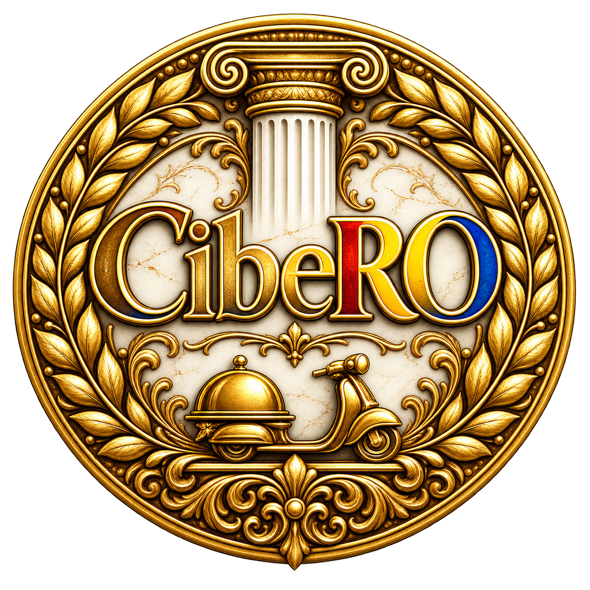
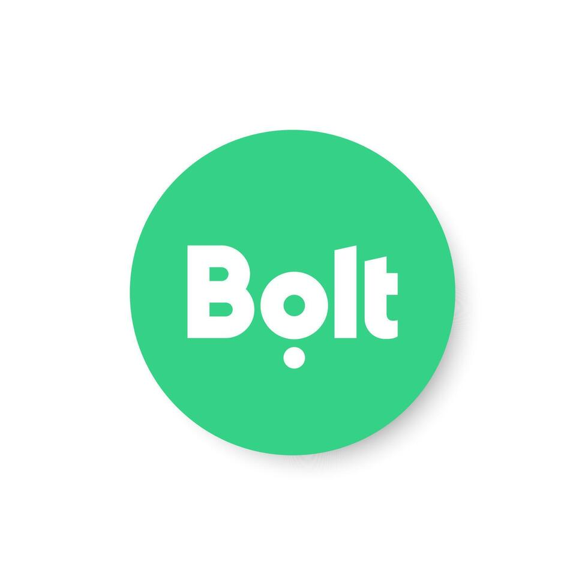

Parcurs clar
Onboarding pas cu pas, fără drumuri ocolite și fără neclarități.
Flotă parteneră · România

Împreună, livrăm mai mult.
Un loc unde curierii pornesc bine, cresc sigur și au o echipă aproape la fiecare pas.

Bolt Glovo W WoltHarta CibeRO
Apasă pe un oraș pentru a-i vedea statutul. Harta se actualizează odată cu flota.
✓ ActivSOON În curând× Neactiv momentan
Despre CibeRO
Începerea unei activități noi ar trebui să fie limpede, nu complicată. CibeRO îți oferă un parcurs clar de activare și sprijinul de care ai nevoie pentru a porni cu capul sus.
De la primul pas până la următoarea platformă, păstrăm totul simplu, corect și aproape de tine.
Află cum începi →Beneficii
Onboarding pas cu pas, fără drumuri ocolite și fără neclarități.
Ai un punct de sprijin atunci când ai nevoie de răspunsuri.
După ce prinzi ritmul, noi oportunități se deschid firesc pentru tine.
Parcursul tău
Finalizează onboarding-ul pentru Bolt Food și intră în contul tău CibeRO. Acolo îți vei vedea următoarele oportunități de activare.
Deschide onboarding-ul →Finalizează pașii de pornire.
Se deblochează după 2 săptămâni de activitate.
Se deblochează după o lună de activitate.
Contul tău CibeRO
Contul tău păstrează activările și arată exact ce urmează să poți solicita.
Întrebări frecvente
Da. Onboarding-ul este gândit tocmai ca să te conducă prin pașii de început.
După validare, activarea ta este urmărită în contul CibeRO, unde apar și oportunitățile următoare.
Wolt devine disponibil după două săptămâni de la finalizarea onboarding-ului, iar Glovo după o lună.
Folosește verificatorul de mai sus pentru un răspuns imediat.